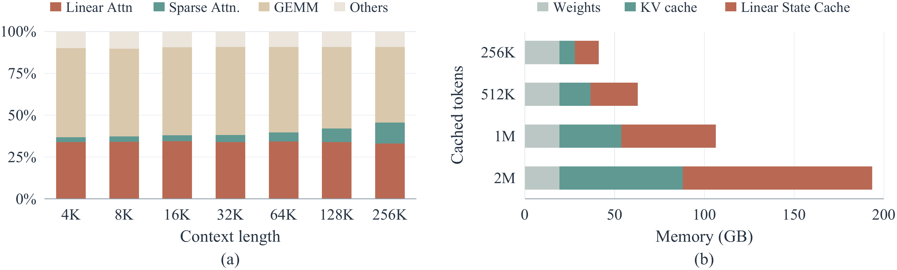
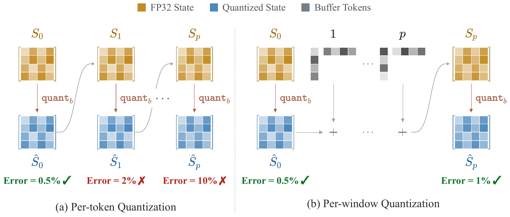
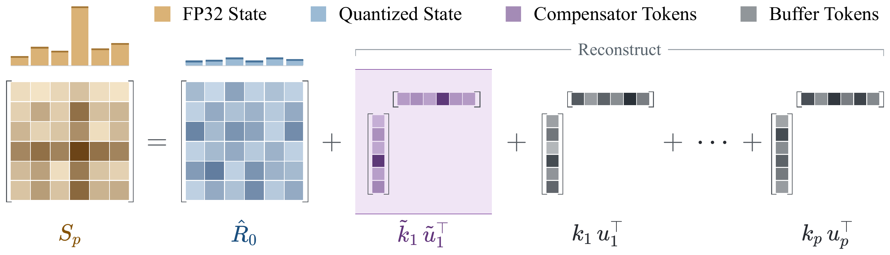
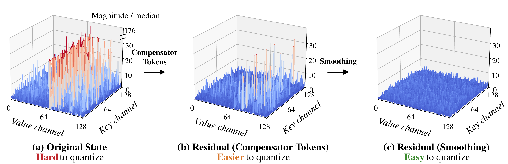
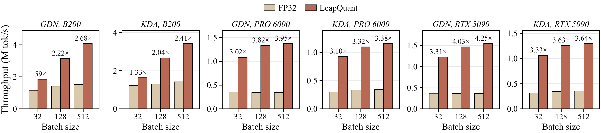
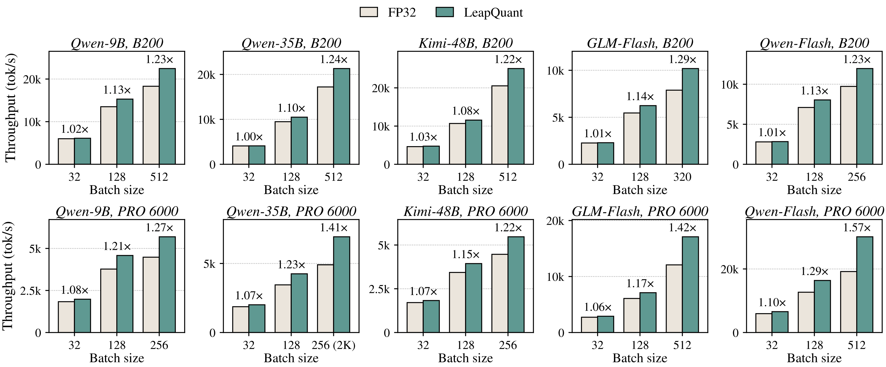
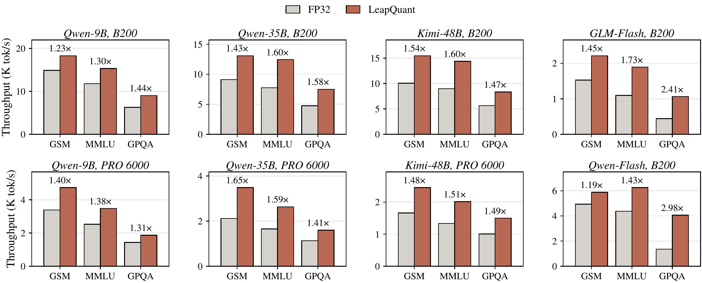

LeapQuant is a training-free method that quantizes the recurrent state of linear attention to 8 bits with near-lossless model quality. With accuracy comparable to the FP32 baseline, it achieves average speedups of 2.05–3.70× at the kernel level and 1.57× for end-to-end inference on NVIDIA B200, RTX PRO 6000, and RTX 5090 GPUs.
Recent LLMs in the Qwen, Kimi, and GLM model families replace many standard attention layers with linear attention, such as Gated DeltaNet (GDN) and Kimi Delta Attention (KDA). Linear attention compresses the context into a fixed-size recurrent state, which reduces the cost of long-context processing.
However, the recurrent state still imposes substantial memory bandwidth and capacity costs. For each generated token, a linear attention layer loads its state from HBM, applies a lightweight update, and writes it back, so decoding is bottlenecked by memory bandwidth. The state also takes a large share of GPU memory when prefix caching is enabled, as serving systems keep a separate state for each cached prefix.

(a) Linear attention takes a large share of decoding time. (b) Recurrent states take a large share of GPU memory under prefix caching.
Quantizing the recurrent state is a natural way to reduce both memory traffic and footprint, but it can significantly degrade model quality. The state is updated recurrently at every decoding step, so the rounding error introduced by each quantization is carried into all later states and accumulates over long contexts. In addition, the state contains outlier rows and columns that widen the quantization range and force smaller values onto coarse quantization levels, amplifying the error of each quantization.
Accurate low-bit quantization therefore requires reducing both how often error is introduced and how much error each quantization introduces. LeapQuant addresses both with three training-free techniques.
To limit error accumulation, LeapQuant leaps over a window of tokens before quantizing the state again. At the beginning of each window, LeapQuant stores the recurrent state in low precision. Within the window, it holds this state fixed, buffers higher-precision token updates, and computes each output from the fixed state and the buffered updates. Only at the end of the window does it reconstruct and quantize the full updated state for the next window, so quantization error is introduced far less often.

To reduce the error of each quantization, LeapQuant captures the state's largest outliers in high precision as a few Compensator Tokens. Each Compensator Token is a high-precision outer product of two vectors, capturing large-magnitude patterns across both rows and columns and leaving a residual that is easier to quantize. Since these rank-one terms have the same form as real-token updates, LeapQuant incorporates them directly into the window's update path, using only a few additional vectors and no separate state update.

After the Compensator Tokens are removed, the residual can still have uneven magnitudes across key channels, and a few large channels can dominate the quantization scale. LeapQuant smooths the residual before quantization to balance its row magnitudes. The smoothing scales stay fixed within each window and are recomputed at every window boundary. In a Qwen3.5-9B head, Compensator Tokens and smoothing reduce outliers from 176× the median magnitude to 5.3×.

We evaluate LeapQuant on models from the Qwen, Kimi, and GLM families. At 8 bits, LeapQuant achieves accuracy comparable to the FP32 baseline, while reducing state memory traffic by 3.4× and end-to-end memory footprint by up to 56%.
Downstream accuracy (%, higher is better, averaged over three seeds) on AIME 2026, BeyondAIME, GPQA-Diamond, and LiveCodeBench v6. Naive FP8/INT8 state quantization collapses on Qwen3.5-9B, and even BF16 loses 11.5 points on average, while LeapQuant matches FP32 at 8 and 6 bits and stays within 3.4 points at 4 bits.
| Method | Qwen3.5-9B | GLM-5.3-Flash | Qwen3.8-Flash-Next | Avg. | |||||||||
|---|---|---|---|---|---|---|---|---|---|---|---|---|---|
| AIME | Beyond | GPQA | LCB | AIME | Beyond | GPQA | LCB | AIME | Beyond | GPQA | LCB | ||
| FP32 | 87.9 | 63.3 | 81.3 | 64.1 | 92.2 | 80.7 | 92.1 | 85.2 | 98.5 | 85.1 | 91.4 | 86.8 | 84.0 |
| BF16 | 72.1 | 33.7 | 66.2 | 49.6 | 76.7 | 57.2 | 90.6 | 74.6 | 96.8 | 78.8 | 90.2 | 84.0 | 72.5 |
| 8-bit methods | |||||||||||||
| LeapQuant | 87.9 | 64.0 | 81.8 | 64.1 | 91.1 | 83.2 | 91.2 | 87.5 | 99.0 | 85.3 | 91.6 | 85.8 | 84.4 |
| FP8 | 0.0 | 0.1 | 2.2 | 5.9 | 69.6 | 44.2 | 82.0 | 53.2 | 82.5 | 52.8 | 76.8 | 71.5 | 45.1 |
| INT8 | 3.9 | 1.8 | 17.2 | 10.7 | 87.4 | 66.8 | 90.4 | 67.4 | 67.5 | 41.8 | 61.3 | 56.0 | 47.7 |
| KVQuant | 70.3 | 39.9 | 66.8 | 55.5 | 87.9 | 72.8 | 90.6 | 83.0 | 94.7 | 74.2 | 87.2 | 79.9 | 75.2 |
| QuaRot | 11.4 | 7.4 | 38.2 | 35.6 | 91.0 | 76.2 | 90.9 | 78.6 | 88.3 | 61.0 | 84.7 | 72.0 | 61.3 |
| TurboQuant | 67.9 | 43.2 | 62.0 | 42.2 | 83.8 | 67.3 | 89.9 | 73.8 | 95.4 | 78.4 | 89.9 | 84.7 | 73.2 |
| 6-bit methods | |||||||||||||
| LeapQuant | 87.9 | 63.6 | 81.0 | 65.4 | 92.9 | 82.7 | 91.2 | 86.3 | 98.8 | 85.8 | 89.9 | 86.8 | 84.4 |
| TurboQuant | 19.3 | 7.2 | 33.2 | 13.0 | 88.1 | 66.8 | 88.0 | 66.2 | 94.4 | 73.1 | 88.2 | 83.7 | 60.1 |
| MXFP6 | 0.0 | 0.0 | 0.8 | 0.5 | 71.4 | 44.8 | 82.7 | 53.4 | 59.2 | 34.6 | 63.3 | 58.0 | 39.1 |
| NVFP6 | 0.0 | 0.1 | 1.5 | 7.6 | 39.2 | 17.1 | 67.8 | 36.9 | 80.4 | 52.9 | 73.7 | 67.4 | 37.1 |
| 4-bit methods | |||||||||||||
| LeapQuant | 85.0 | 60.1 | 80.0 | 61.3 | 85.7 | 69.0 | 91.4 | 75.3 | 98.6 | 83.8 | 91.6 | 85.8 | 80.6 |
| TurboQuant | 3.5 | 1.4 | 26.8 | 11.5 | 59.7 | 43.2 | 77.9 | 49.4 | 79.3 | 49.8 | 74.9 | 62.8 | 45.0 |
| MXFP4 | 0.0 | 0.0 | 3.7 | 0.3 | 25.3 | 18.6 | 70.9 | 29.3 | 1.7 | 2.8 | 25.4 | 22.6 | 16.7 |
Best score in each column within the 8-bit, 6-bit, and 4-bit groups is in bold. Beyond = BeyondAIME, LCB = LiveCodeBench v6. Full results on more models and tasks are in the paper.
On one linear attention layer, LeapQuant achieves average speedups of 2.05–3.70× over the FP32 state across GDN and KDA layers on B200, RTX PRO 6000, and RTX 5090 GPUs.

On pure decode steps in vLLM at 4K context, LeapQuant improves throughput by 1.22–1.29× at the largest batch size on B200 and by 1.22–1.57× on RTX PRO 6000. The gain grows with batch size, as linear attention takes a larger share of each step.

Decode-step throughput in vLLM at context length 4K. On the RTX PRO 6000, which has limited memory, we use a smaller maximum batch size and context length, and only 8 layers of GLM-5.3-Flash and Qwen3.8-Flash-Next.
Integrated into vLLM, LeapQuant achieves an average end-to-end speedup of 1.57×.

@article{pan2026leapquant,
title = {LeapQuant: Efficient Linear Attention with Accurate Recurrent State Quantization},
author = {Pan, Yi and Xi, Haocheng and Zhu, Kan and Li, Xingyang and Wu, Yibo and Mishra, Mayank and
Zhang, Hongtao and Zheng, William X. and Kasikci, Baris and Han, Song and Keutzer, Kurt and
Iyer, Rishabh and Stoica, Ion},
journal = {arXiv preprint arXiv:2609.38166},
year = {2026}
}